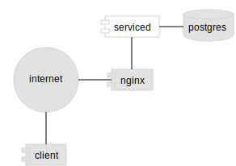

Components diagram
The components diagram shows services and processes related to one another. Good for system overviews and microservice architectures. Highlight important components.
Use lines between components unless you are conveying signaling direction between them.